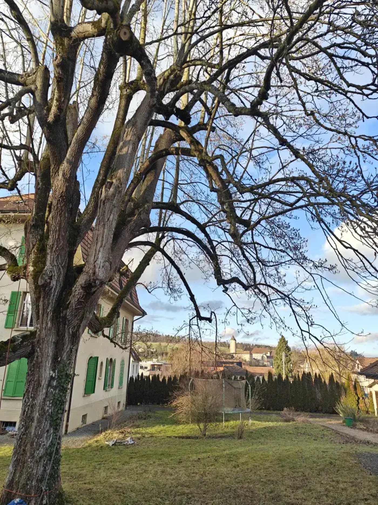
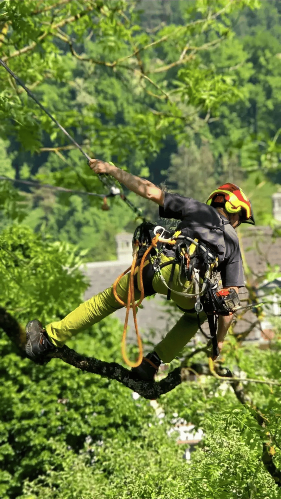

Taille et entretien d'arbres dans les règles de l'art
Un arboriste-grimpeur professionnel prend soin de vos arbres : taille raisonnée, mise en sécurité, allègement de couronne, bois mort. Sans nacelle, sans dégâts, avec un devis clair et gratuit.
- Devis gratuit et sans engagement
- Réponse sous 48 h ouvrées
- Taille raisonnée, respectueuse de l'arbre
- Chantier propre, branches évacuées
Recevez votre devis gratuit
Décrivez-nous votre arbre en 30 secondes. Nous vous rappelons pour fixer une visite.
Chaque arbre mérite la taille qui lui convient
Il n'existe pas de taille standard. Nous observons l'arbre, son essence, son âge et son environnement avant de choisir l'intervention la plus juste.
Taille d'entretien
Suppression du bois mort, des branches qui se croisent ou frottent, éclaircie de la couronne pour laisser passer la lumière et l'air. L'arbre garde sa silhouette naturelle.
Réduction et allègement de couronne
Pour un arbre devenu trop volumineux, trop proche d'une toiture ou d'une ligne. Nous réduisons progressivement, sans étêtage, pour préserver la vigueur et la sécurité.
Rehaussement de couronne
Remontée des branches basses pour dégager un passage, une façade, un accès véhicule ou une vue, tout en conservant l'équilibre de l'arbre.
Élagage de sécurité
Branches fissurées, bois mort au-dessus d'une zone de passage, arbre fragilisé après une tempête. Nous sécurisons rapidement et proprement.
Taille de formation
Pour les jeunes arbres et les plantations récentes : guider la structure dès les premières années évite les gros travaux plus tard.
Haubanage et consolidation
Quand une fourche ou une charpentière présente une faiblesse, un haubanage dynamique permet souvent de conserver l'arbre plutôt que de l'abattre.
Une taille bien faite protège votre arbre, votre maison et vos proches
Un arbre non entretenu finit par poser problème : branches mortes qui tombent, couronne déséquilibrée, maladies qui s'installent. Une intervention professionnelle au bon moment coûte bien moins qu'un abattage forcé.
Sécurité
Élimination du bois mort et des branches à risque au-dessus des toitures, terrasses, routes et aires de jeux.
Santé de l'arbre
Des coupes propres, au bon endroit et à la bonne saison, favorisent la cicatrisation et limitent champignons et parasites.
Lumière et espace
Retrouvez de la clarté dans le jardin et la maison, dégagez une vue ou un passage sans sacrifier l'arbre.
Valeur du bien
Des arbres sains et bien conduits valorisent votre propriété et vous évitent un abattage coûteux dans quelques années.

La taille raisonnée : intervenir juste, ni trop, ni trop peu
Un arbre étêté ou taillé trop sévèrement s'affaiblit, produit des rejets fragiles et devient plus dangereux qu'avant. Nous faisons l'inverse.
- Diagnostic avant de couperEssence, vigueur, défauts mécaniques, contraintes du terrain : chaque intervention commence par une lecture de l'arbre.
- Des coupes propres, au bon endroitRespect du col de la branche et des proportions : l'arbre cicatrise mieux et reste beau.
- Accès en grimpe, jardin préservéPas d'engin lourd sur votre pelouse ni de nacelle encombrante : nous travaillons à la corde, même dans les endroits difficiles.
- Chantier rendu propreBranches broyées ou évacuées, terrain nettoyé. Vous ne vous occupez de rien.
Quatre étapes, zéro mauvaise surprise
Vous nous contactez
Par le formulaire ou par téléphone. Quelques mots sur votre arbre suffisent pour démarrer.
Visite et diagnostic
Nous venons voir l'arbre sur place, écoutons vos attentes et vous conseillons honnêtement sur ce qu'il faut faire, ou ne pas faire.
Devis clair et gratuit
Vous recevez un devis écrit et détaillé, sans frais cachés. Vous décidez en toute liberté.
Intervention et nettoyage
Nous intervenons à la date convenue, sécurisons la zone et laissons votre jardin propre.
Nos interventions dans la région






Jura, Neuchâtel et Jura bernois
Basés à Courgenay, en Ajoie, nous intervenons chez les particuliers, les entreprises et les collectivités dans toute la région.
Canton du Jura
- Porrentruy
- Delémont
- Courgenay
- Alle
- Bassecourt
- Courrendlin
- Saignelégier
- Le Noirmont
- Toute l'Ajoie
Canton de Neuchâtel
- Neuchâtel
- La Chaux-de-Fonds
- Le Locle
- Val-de-Ruz
- Val-de-Travers
- Boudry
- Littoral
Jura bernois
- Bienne
- Moutier
- Tavannes
- Saint-Imier
- Tramelan
- Reconvilier
- La Neuveville
Ce que nos clients nous demandent
Quelle est la meilleure période pour tailler un arbre ?
Cela dépend de l'essence et de l'objectif. La taille d'entretien se pratique souvent en hiver, hors gel, ou en été après la pousse. Certaines essences supportent mal la taille en période de montée de sève. Nous vous conseillons la période la plus favorable lors de la visite.
Combien coûte une taille d'arbre ?
Le prix dépend de la taille de l'arbre, de son accessibilité, du type d'intervention et de l'évacuation des branches. C'est pourquoi nous nous déplaçons gratuitement pour établir un devis précis et écrit. Aucun engagement de votre part.
Faut-il une autorisation pour tailler ou abattre un arbre ?
Une simple taille d'entretien ne nécessite en général aucune démarche. L'abattage, ou l'intervention sur un arbre protégé ou situé en zone particulière, peut être soumis à autorisation communale. Nous vous indiquons la marche à suivre selon votre commune.
Mon arbre est très grand ou difficile d'accès. Est-ce possible ?
Oui. En tant qu'arboriste-grimpeur, nous accédons à la couronne à la corde, sans nacelle ni engin lourd. C'est la solution idéale pour les jardins, les cours intérieures et les terrains en pente.
Que deviennent les branches coupées ?
Selon votre souhait et le devis, les branches sont broyées sur place, évacuées, ou le bois est laissé débité pour votre chauffage. Le terrain est systématiquement nettoyé avant notre départ.
Intervenez-vous aussi pour les entreprises et les communes ?
Oui. Nous accompagnons les entreprises sur leurs chantiers, ainsi que les collectivités pour le suivi de groupes d'arbres, la gestion des sujets dangereux et les projets de plantation.
Un doute sur un arbre ? Demandez l'avis d'un professionnel.
Visite et devis gratuits, sans engagement. Nous vous répondons sous 48 h ouvrées.